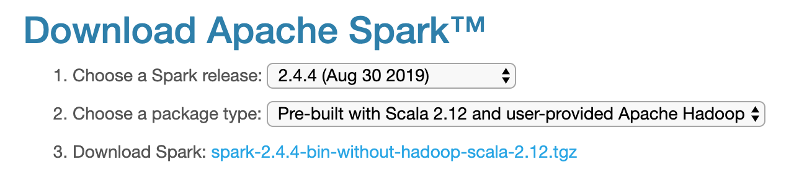
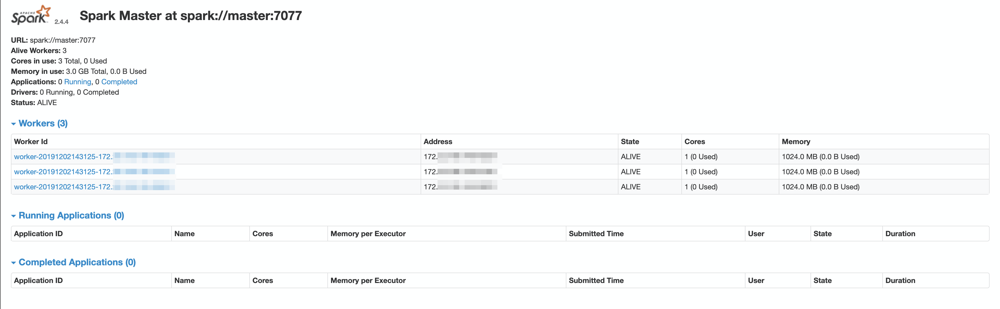
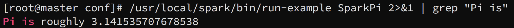

学习在阿里云上搭建 Hadoop + HBase + Hive + Spark 集群的笔记。搭建过程中遇到了很多问题，在查阅资料的过程中也走了很多弯路。在这里将搭建步骤和问题一一记录，既方便日后复习，也为其它小伙伴提供一些帮助。
本篇是笔记的第三部分，记录了 Spark 的安装与配置。
Spark
参考内容：技术颜良的博文
Spark 下载和安装
和之前的 Hadoop、HBase 类似，首先在官网下载合适的安装包到本地，再上传至服务器解压并重命名。Spark 官方提供了内置 Hadoop 和 Scala 的版本。我们已经有自己配置的 Hadoop 了，所以我这里选择了只有 Scala 的版本。注意，如果你选择自行安装 scala 的话，要记得查阅 Spark 支持的 Scala 版本。这里我们使用 Spark 2.4.4：
Spark 配置
/conf文件夹下的配置文件内有详细的说明。在配置之前可以阅读一下。首先还是配置 Spark 目录。打开/root/.bash_profile，添加如下内容：
1 | export SPARK_HOME=/usr/local/spark |
别忘了在其它两台节点进行配置，并且 source。
接着来到/usr/local/spark/conf文件夹下，配置spark-env.sh。conf 文件夹下的配置文件都是模板文件，配置前要记得重命名或者复制一份再重命名。在spark-env.sh中加入如下内容：
1 | 所有的配置都需要区分你希望 Spark 以何种模式运行。这里的配置是基于 yarn 的 cluster 模式 |
配置slaves，添加如下内容：
1 | master |
将 Spark 传送至 slave 节点：
1 | scp -r /usr/local/spark root@slave01:/usr/local |
Spark 测试
首先要启动 Spark。输入：
1 | /usr/local/spark/sbin/start-all.sh |
启动后，打开浏览器进入 8081 端口，可以看到如下画面：

Spark 和 Hadoop 之间有同名 .sh 文件。为了不发生混淆和冲突，最好还是在文件名前补全目录
接下来使用 Spark 自带求 pi 例子进行测试：
1 | /usr/local/spark/bin/run-example SparkPi 2>&1 | grep "Pi is" |
得到结果如下：
遇到的问题
打开 spark-shell，提示 unable to load native-hadoop library for your platform
这个问题似乎并不会影响 spark-shell 的运行，但是看到总是不舒服。解决方法很简单，在spark-env.sh中加入：
1 | export LD_LIBRARY_PATH=$LD_LIBRARY_PATH:$HADOOP_HOME/lib/native |